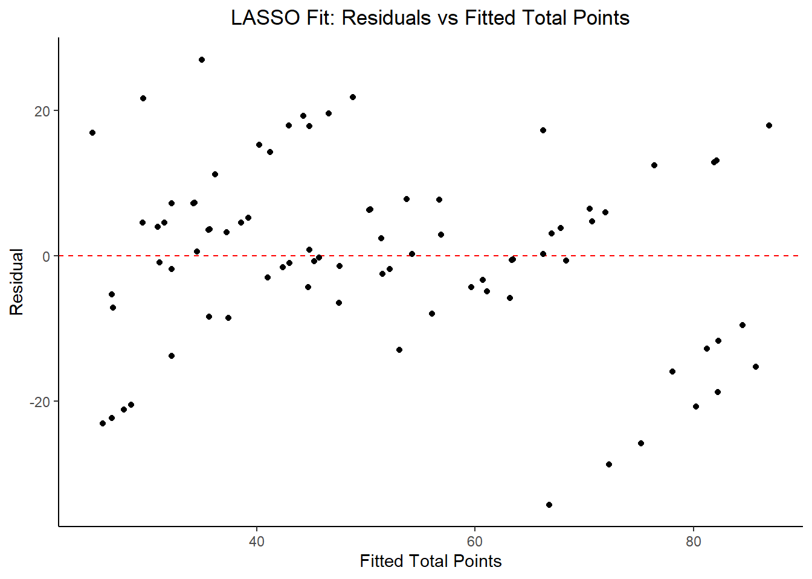
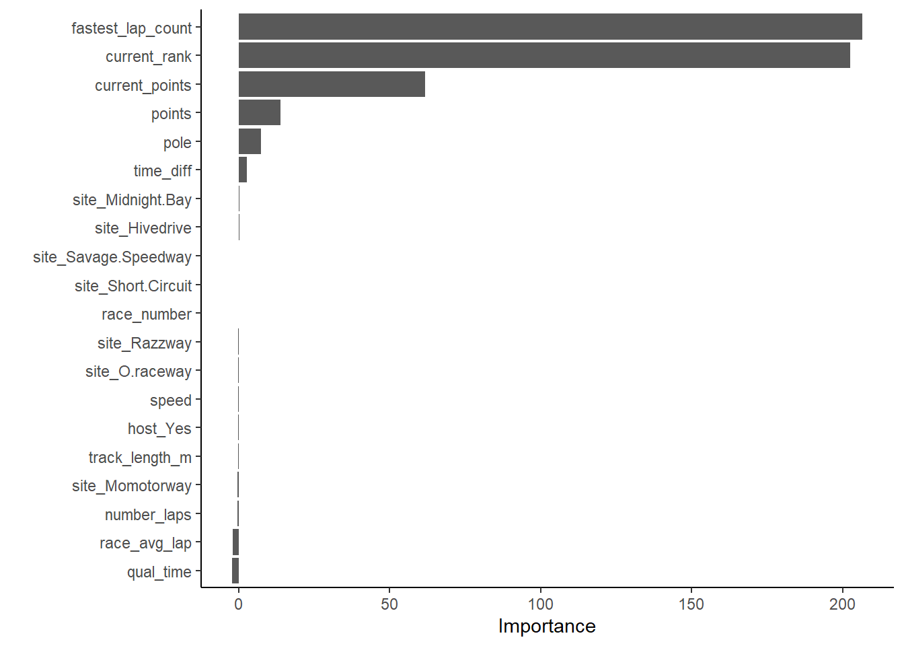

Tidy Tuesday Exercise (Module 13)
Introduction
The following exercise is for Module 13 in Dr. Andreas Handel’s MADA Course. We are using the Marble Racing dataset, which is a previous TidyTuesday dataset from the week of 06/02/2020.
This analysis will follow these steps:
- Load, wrangle, and explore the data.
- Formulate a question / hypothesis, and determine outcome (and predictors as applicable) of interest.
- Further data processing and cleaning.
- Split data into train / test subsets.
- Fit at least 4 different ML models to the data using the
tidymodelsframework. - Choose the overall best model.
- Evaluate the chosen model on the test data.
- Discussion summary.
This analysis fits the following models to the outcome of interest:
- Null Model
- Decision Tree
- Random Forest
- Bagged Tree
- LASSO
Each machine learning model will follow this process:
- Model Specification
- Workflow Definition
- Tuning Grid Specification
- Tuning Using Cross-Validation and the
tune_grid()function - Identify Best Model
- Model Evaluation
A few comments about notation and documentation throughout this markdown:
- each iteration of data processing will be called
marbles_# - the final processed dataset will be saved as
marbles_processedin thedatafolder in the GitHub repository for this website
Let’s get started!
Required Packages
The following R packages are required for this analysis: ## Required Packages The following R packages are required for this exercise:
- here: for data loading/saving
- summarytools: for overall dataframe summaries
- skimr: for variable summaries
- tidyverse: for data management
- lubridate: for wrangling date variables
- ggplot2: for plotting data
- RColorBrewer: for coloring the plots
- ggbump: for creating bump plots
- tidymodels: for data modeling
- broom.mixed: for converting bayesian models to tidy tibbles
- rpart.plot: for visualizing a decision tree
- vip: for variable importance plots
- glmnet: for lasso models
- doParallel: for parallel backend for tuning processes
- ranger: for random forest models
Load Data
The code to load the data is referenced in the GitHub repository linked above. It is also stored in the data folder in the GitHub repository for this website (linked in the top right corner of the page).
#using the website link
marbles <- readr::read_csv('https://raw.githubusercontent.com/rfordatascience/tidytuesday/master/data/2020/2020-06-02/marbles.csv')## Rows: 256 Columns: 14## -- Column specification --------------------------------------------------------
## Delimiter: ","
## chr (9): date, race, site, source, marble_name, team_name, pole, host, notes
## dbl (5): time_s, points, track_length_m, number_laps, avg_time_lap##
## i Use `spec()` to retrieve the full column specification for this data.
## i Specify the column types or set `show_col_types = FALSE` to quiet this message.#save the raw csv to the `data` folder
raw_data_location <- here::here("data", "tidytuesday2", "marbles_raw.csv")
marbles_raw <- utils::write.csv(marbles, raw_data_location)Data Background
From the readme.md on GitHub, this week’s data comes from Randy Olson’s compilation of Jelle’s Marble Runs.
The description of the data from Randy Olson’s blogpost is as follows: >“Jelle’s Marble Runs started as a quirky YouTube channel back in 2006 and has refined the art of marble racing to the point that many — including sponsor John Oliver from Last Week Tonight — consider marble racing a legitimate contender for the national sports spotlight. Given that Jelle’s Marble Runs just completed their popular Marbula One competition last month, I was curious to look at the race results to see if these races were anything more than chaos. > >Do some marbles race better than others? Who would I put my money on in season 2 of Marbula One? … If any of these questions interest you, read on and I’ll answer some of them. > >The first step to answering these questions was to get some data. Thankfully, all of the Marbula One videos are organized in a YouTube playlist available here. From every race, my marble racing analytics team recorded each marble racer’s qualifier performance, total race time, average lap time, final rank, and some other statistics. That dataset is available for download on my website here.”
The data dictionary is described in the readme.md in the repository, but is also replicated below for reference in the analysis.
#create data dictionary dataframe
variable <- c("date", "race", "site", "source", "marble_name", "team_name", "time_s", "pole", "points", "track_length_m", "number_laps", "avg_time_lap", "host", "notes")
class <- c("character", "character", "character", "character", "character", "character", "double", "character", "double", "double", "double", "double", "character", "character")
description <- c("date of race", "race id", "site of race", "youtube url", "name of marble", "team name", "time in seconds", "pole position", "points gained", "track length in meters", "number of laps", "average lap time", "host of race", "notes (very few, but some notes about potential errors")
data_dictionary <- data.frame(variable, class, description)
print(data_dictionary)## variable class
## 1 date character
## 2 race character
## 3 site character
## 4 source character
## 5 marble_name character
## 6 team_name character
## 7 time_s double
## 8 pole character
## 9 points double
## 10 track_length_m double
## 11 number_laps double
## 12 avg_time_lap double
## 13 host character
## 14 notes character
## description
## 1 date of race
## 2 race id
## 3 site of race
## 4 youtube url
## 5 name of marble
## 6 team name
## 7 time in seconds
## 8 pole position
## 9 points gained
## 10 track length in meters
## 11 number of laps
## 12 average lap time
## 13 host of race
## 14 notes (very few, but some notes about potential errorsI wanted to better understand the pole position and points gained variables, as I assumed they are unique to the sport of marble racing.
After some digging on the Jelle’s Marble Runs Fandom WikiPage, the points system for season 1 is designed to be identical to Formula One racing:
- 1st place: 25 points
- 2nd place: 18 points
- 3rd place: 15 points
- 4th place: 12 points
- 5th place: 10 points
- 6th place: 8 points
- 7th place: 6 points
- 8th place: 4 points
- 9th place: 2 points
- 10th place: 1 point
- 11th through 16th place: 0 points
- Did not finish: 0 points
- The marble who completes the course with the fastest time: 1 bonus point
Just in case we need it later, let’s create a dataframe for points definitions.
value <- c(25, 18, 15, 12, 10, 8, 6, 4, 2, 1, 0, 0, 0, 0, 0, 0)
place <- c("1st", "2nd", "3rd", "4th", "5th", "6th", "7th", "8th", "9th", "10th", "11th", "12th", "13th", "14th", "15th", "16th")
points_dictionary <- data.frame(value, place)
print(points_dictionary)## value place
## 1 25 1st
## 2 18 2nd
## 3 15 3rd
## 4 12 4th
## 5 10 5th
## 6 8 6th
## 7 6 7th
## 8 4 8th
## 9 2 9th
## 10 1 10th
## 11 0 11th
## 12 0 12th
## 13 0 13th
## 14 0 14th
## 15 0 15th
## 16 0 16thIn motorsports, the pole position is the position at the front at the start of a racing event. That position is typically given to the vehicle and driver with the best qualifying time in the trials before the race. In this dataset, the pole variable appears to correspond to the positioning at the beginning of the race.
Data Overview
Take an initial look at the raw data. Start by using utils::str().
#data structure
utils::str(marbles)## spec_tbl_df [256 x 14] (S3: spec_tbl_df/tbl_df/tbl/data.frame)
## $ date : chr [1:256] "15-Feb-20" "15-Feb-20" "15-Feb-20" "15-Feb-20" ...
## $ race : chr [1:256] "S1Q1" "S1Q1" "S1Q1" "S1Q1" ...
## $ site : chr [1:256] "Savage Speedway" "Savage Speedway" "Savage Speedway" "Savage Speedway" ...
## $ source : chr [1:256] "https://youtu.be/JtsQ_UydjEI?t=356" "https://youtu.be/JtsQ_UydjEI?t=356" "https://youtu.be/JtsQ_UydjEI?t=356" "https://youtu.be/JtsQ_UydjEI?t=356" ...
## $ marble_name : chr [1:256] "Clementin" "Starry" "Momo" "Yellow" ...
## $ team_name : chr [1:256] "O'rangers" "Team Galactic" "Team Momo" "Mellow Yellow" ...
## $ time_s : num [1:256] 28.1 28.4 28.4 28.7 28.7 ...
## $ pole : chr [1:256] "P1" "P2" "P3" "P4" ...
## $ points : num [1:256] NA NA NA NA NA NA NA NA NA NA ...
## $ track_length_m: num [1:256] 12.8 12.8 12.8 12.8 12.8 ...
## $ number_laps : num [1:256] 1 1 1 1 1 1 1 1 1 1 ...
## $ avg_time_lap : num [1:256] 28.1 28.4 28.4 28.7 28.7 ...
## $ host : chr [1:256] "No" "No" "No" "No" ...
## $ notes : chr [1:256] NA NA NA NA ...
## - attr(*, "spec")=
## .. cols(
## .. date = col_character(),
## .. race = col_character(),
## .. site = col_character(),
## .. source = col_character(),
## .. marble_name = col_character(),
## .. team_name = col_character(),
## .. time_s = col_double(),
## .. pole = col_character(),
## .. points = col_double(),
## .. track_length_m = col_double(),
## .. number_laps = col_double(),
## .. avg_time_lap = col_double(),
## .. host = col_character(),
## .. notes = col_character()
## .. )
## - attr(*, "problems")=<externalptr>This confirms imported data classes are correct and match the data dictionary.
Now use base R function summary().
#data summary
summary(marbles)## date race site source
## Length:256 Length:256 Length:256 Length:256
## Class :character Class :character Class :character Class :character
## Mode :character Mode :character Mode :character Mode :character
##
##
##
##
## marble_name team_name time_s pole
## Length:256 Length:256 Min. : 17.76 Length:256
## Class :character Class :character 1st Qu.: 28.40 Class :character
## Mode :character Mode :character Median : 36.28 Mode :character
## Mean :190.84
## 3rd Qu.:338.16
## Max. :492.01
## NA's :3
## points track_length_m number_laps avg_time_lap
## Min. : 0.000 Min. :11.90 Min. : 1.00 Min. :17.76
## 1st Qu.: 0.000 1st Qu.:12.62 1st Qu.: 1.00 1st Qu.:25.94
## Median : 3.000 Median :13.02 Median : 5.00 Median :30.05
## Mean : 6.453 Mean :13.22 Mean : 6.25 Mean :29.70
## 3rd Qu.:11.250 3rd Qu.:14.13 3rd Qu.:10.25 3rd Qu.:33.65
## Max. :26.000 Max. :14.55 Max. :16.00 Max. :41.62
## NA's :128 NA's :3
## host notes
## Length:256 Length:256
## Class :character Class :character
## Mode :character Mode :character
##
##
##
## There are 128 NAs in points, 3 NAs in avg_time_lap. Perhaps the NAs in avg_time_lap correspond to those that didn’t finish the race? In this output, we can’t see any information about the character variables.
Now use skim as it lets us see the distribution of variables.
#data summary
skimr::skim(marbles)| Name | marbles |
| Number of rows | 256 |
| Number of columns | 14 |
| _______________________ | |
| Column type frequency: | |
| character | 9 |
| numeric | 5 |
| ________________________ | |
| Group variables | None |
Variable type: character
| skim_variable | n_missing | complete_rate | min | max | empty | n_unique | whitespace |
|---|---|---|---|---|---|---|---|
| date | 0 | 1.00 | 8 | 9 | 0 | 16 | 0 |
| race | 0 | 1.00 | 4 | 4 | 0 | 16 | 0 |
| site | 0 | 1.00 | 7 | 15 | 0 | 8 | 0 |
| source | 0 | 1.00 | 34 | 34 | 0 | 16 | 0 |
| marble_name | 0 | 1.00 | 4 | 9 | 0 | 32 | 0 |
| team_name | 0 | 1.00 | 6 | 16 | 0 | 16 | 0 |
| pole | 128 | 0.50 | 2 | 3 | 0 | 16 | 0 |
| host | 0 | 1.00 | 2 | 3 | 0 | 2 | 0 |
| notes | 249 | 0.03 | 37 | 100 | 0 | 7 | 0 |
Variable type: numeric
| skim_variable | n_missing | complete_rate | mean | sd | p0 | p25 | p50 | p75 | p100 | hist |
|---|---|---|---|---|---|---|---|---|---|---|
| time_s | 3 | 0.99 | 190.84 | 169.13 | 17.76 | 28.40 | 36.28 | 338.16 | 492.01 | <U+2587><U+2581><U+2581><U+2587><U+2581> |
| points | 128 | 0.50 | 6.45 | 7.74 | 0.00 | 0.00 | 3.00 | 11.25 | 26.00 | <U+2587><U+2582><U+2582><U+2581><U+2581> |
| track_length_m | 0 | 1.00 | 13.22 | 0.95 | 11.90 | 12.62 | 13.02 | 14.13 | 14.55 | <U+2585><U+2585><U+2582><U+2581><U+2587> |
| number_laps | 0 | 1.00 | 6.25 | 5.53 | 1.00 | 1.00 | 5.00 | 10.25 | 16.00 | <U+2587><U+2581><U+2583><U+2582><U+2582> |
| avg_time_lap | 3 | 0.99 | 29.70 | 5.55 | 17.76 | 25.94 | 30.05 | 33.65 | 41.62 | <U+2583><U+2586><U+2587><U+2587><U+2582> |
A few conclusions from this output:
- Each date and each race number are repeated 16 times.
- To that end, each race site is repeated twice, for a total of 8 sites.
- There are 32 marble names, each repeated 8 times.
- There are 16 teams, each repeated 16 times.
- There are 3 NA’s for time of race and average lap time – we will need to investigate why they’re missing (perhaps because they didn’t finish the race?)
- There are 16 values of pole position, which suggests 16 marbles competed in each race.
- The 50% missing rate for
poleandpointssuggests that there are two rows for each race (opportunity to concatenate the rows) - Each track length is repeated 32 times, with 8 unique variables.
- Number of laps ranges from 1 to 16.
- The average lap time seems relatively normally distributed.
- There are 16 hosts.
- There are 7 notes that will require investigation during the cleaning process.
All of this information together suggests there were 16 teams competing in 8 races for Season 1 of Marbula One. Each race was held at a different track, and there was a host team for each race. The first date for each race is the qualifying race date, and the second date is the actual race.
Data Cleaning
Based on the examination of the data so far, there are a few immediately obvious steps for cleaning the data:
- Create new variables for qualifying vs race times and average lap times.
- Investigate the 7 values of the
notesvariable. - Replace
raceanddatevariable with a newrace_numbervariable. - Drop meaningless variables (e.g.
source,notes,avg_lap_time,time_s). - Concatenate the values of qualifying and actual race variables, so that there is only one row for each race and team combination.
Let’s start with step #1: create new variables to specify race vs qualifying times. There are a number of ways to do this, but I’m going to use the fact that pole is NA for actual races and points is NA for qualifying races.
#create shadow df to not manipulate the raw df
marbles_1 <- marbles
#for race time in seconds
marbles_1$qual_time <- ifelse(is.na(marbles_1$points), marbles_1$time_s, NA)
marbles_1$race_time <- ifelse(is.na(marbles_1$pole), marbles_1$time_s, NA)
#for average lap length
marbles_1$qual_avg_lap <- ifelse(is.na(marbles_1$points), marbles_1$avg_time_lap, NA)
marbles_1$race_avg_lap <- ifelse(is.na(marbles_1$pole), marbles_1$avg_time_lap, NA)Moving onto step #2: investigate the 7 notes values.
#print the notes
marbles_1$notes[!is.na(marbles_1$notes)]## [1] "Note: Came to complete stop in Lap 14"
## [2] "*Note: A yellow SAFETY flag is issued due to incident in Lap 1."
## [3] "Shortly after, a red SUSPENDED flag is issued to restart the race, due to major blockage."
## [4] "**Note: Upon the restart, another red flag is issued due to a track invasion incident by a rowdy fan"
## [5] "Race resumed normally after the culprit is escorted by security marbles"
## [6] "*Note: Slight incident between Speedy and Clementin"
## [7] "Ultimately, JMRC reviews and deems no action is necessary"#are they associated with different races / teams?
marbles_1[!(is.na(marbles_1$notes)), ]## # A tibble: 7 x 18
## date race site source marble_name team_name time_s pole points
## <chr> <chr> <chr> <chr> <chr> <chr> <dbl> <chr> <dbl>
## 1 22-Mar-20 S1R6 Short Circuit https~ Sublime Limers NA <NA> 0
## 2 29-Mar-20 S1R7 Razzway https~ Smoggy Hazers 331. <NA> 25
## 3 29-Mar-20 S1R7 Razzway https~ Orangin O'rangers 332. <NA> 19
## 4 29-Mar-20 S1R7 Razzway https~ Anarchy Balls of~ 334. <NA> 10
## 5 29-Mar-20 S1R7 Razzway https~ Rapidly Savage S~ 336. <NA> 6
## 6 4-Apr-20 S1Q8 Midnight Bay https~ Speedy Savage S~ 24.5 P1 NA
## 7 4-Apr-20 S1Q8 Midnight Bay https~ Clutter Balls of~ 25.2 P3 NA
## # ... with 9 more variables: track_length_m <dbl>, number_laps <dbl>,
## # avg_time_lap <dbl>, host <chr>, notes <chr>, qual_time <dbl>,
## # race_time <dbl>, qual_avg_lap <dbl>, race_avg_lap <dbl>#since each note represents a different race / team, we can leave the notes and let them be combined
# I prefer to keep the notes in case we need to explain any anomalies in the dataNext, step 3: Replace race and date variable with a new race_number variable. We can do this by extracting the 4th character in the race variable, which will tell us the race number.
#just using base R `substr` function to specify finding the 4th value and then selecting the 4th value
marbles_1$race_number <- substr(marbles_1$race, 4, 4)
marbles_2 <- marbles_1 %>%
dplyr::select(-c(date, race, source, time_s, avg_time_lap))Moving onto step 4: drop irrelevant variables. This is to avoid confusing R when we collapse the rows.
#drop date, race, source, time_s, avg_time_lap
marbles_2 <- marbles_1 %>%
dplyr::select(-c(date, race, source, time_s, avg_time_lap))
#reorder columns
marbles_3 <- marbles_2[, c(14, 1:3, 6:8, 4, 10, 12, 5, 11, 13, 9)]The big step, #5: combine all the rows such that there is only one row per race / team.
#create filtered subset for qualifying data
marbles_4 <- marbles_3 %>%
dplyr::select(-c(points, race_time, race_avg_lap)) %>%
dplyr::filter(!is.na(pole)) %>%
dplyr::rename(notes_1 = notes)
#create filtered subset for race data
marbles_5 <- marbles_3 %>%
dplyr::select(-c(pole, qual_time, qual_avg_lap)) %>%
dplyr::filter(!is.na(points)) %>%
dplyr::rename(notes_2 = notes)
#bind the columns
marbles_6 <- cbind(marbles_4, marbles_5)
#remove duplicate columns
marbles_7 <- marbles_6 %>%
dplyr::select(-c(1:7))
#combine notes columns
marbles_8 <- marbles_7 %>%
dplyr::mutate(notes = dplyr::coalesce(notes_1, notes_2)) %>%
dplyr::select(-c(notes_1, notes_2))
#reorder columns
marbles_9 <- marbles_8[, c(4:10, 1:3, 12, 13, 11, 14)]We now have a cleaned dataset that has one row per race/team and includes information about qualifying and actual races. Let’s look at the dataframe summary.
skimr::skim(marbles_9)| Name | marbles_9 |
| Number of rows | 128 |
| Number of columns | 14 |
| _______________________ | |
| Column type frequency: | |
| character | 7 |
| numeric | 7 |
| ________________________ | |
| Group variables | None |
Variable type: character
| skim_variable | n_missing | complete_rate | min | max | empty | n_unique | whitespace |
|---|---|---|---|---|---|---|---|
| race_number | 0 | 1.00 | 1 | 1 | 0 | 8 | 0 |
| site | 0 | 1.00 | 7 | 15 | 0 | 8 | 0 |
| marble_name | 0 | 1.00 | 4 | 9 | 0 | 32 | 0 |
| team_name | 0 | 1.00 | 6 | 16 | 0 | 16 | 0 |
| host | 0 | 1.00 | 2 | 3 | 0 | 2 | 0 |
| pole | 0 | 1.00 | 2 | 3 | 0 | 16 | 0 |
| notes | 121 | 0.05 | 37 | 100 | 0 | 7 | 0 |
Variable type: numeric
| skim_variable | n_missing | complete_rate | mean | sd | p0 | p25 | p50 | p75 | p100 | hist |
|---|---|---|---|---|---|---|---|---|---|---|
| track_length_m | 0 | 1.00 | 13.22 | 0.95 | 11.90 | 12.62 | 13.02 | 14.13 | 14.55 | <U+2585><U+2585><U+2582><U+2581><U+2587> |
| number_laps | 0 | 1.00 | 11.50 | 2.41 | 9.00 | 9.75 | 10.50 | 13.25 | 16.00 | <U+2587><U+2582><U+2582><U+2582><U+2582> |
| qual_time | 0 | 1.00 | 27.52 | 5.16 | 17.76 | 23.93 | 28.55 | 31.00 | 39.49 | <U+2585><U+2587><U+2587><U+2585><U+2582> |
| qual_avg_lap | 0 | 1.00 | 27.52 | 5.16 | 17.76 | 23.93 | 28.55 | 31.00 | 39.49 | <U+2585><U+2587><U+2587><U+2585><U+2582> |
| race_time | 3 | 0.98 | 358.08 | 48.77 | 317.73 | 333.06 | 338.23 | 360.16 | 492.01 | <U+2587><U+2582><U+2581><U+2581><U+2582> |
| race_avg_lap | 3 | 0.98 | 31.92 | 5.03 | 23.39 | 29.66 | 32.44 | 34.48 | 41.62 | <U+2586><U+2585><U+2587><U+2583><U+2583> |
| points | 0 | 1.00 | 6.45 | 7.74 | 0.00 | 0.00 | 3.00 | 11.25 | 26.00 | <U+2587><U+2582><U+2582><U+2581><U+2581> |
Feature Engineering
There are a few variables that might be interesting to create based on the data:
- Total points for the season for each team
- Final placement ranking for the season for each team
- The number of times in the season a bonus point was awarded for fastest lap for each team
- The cumulative points throughout the season for each team
- Ranking throughout the season for each team
- Difference in time between qualifying and actual races.
- Average marble speed during the race.
For the season-long characteristics, I’m going to create a new season summary dataframe, and then I will merge it back into the original dataframe at the end of this section.
Let’s start with #1: find total points for the season for each team.
#sum the points by team_name
season_stats <- marbles_9 %>%
dplyr::filter(!is.na(points)) %>%
dplyr::group_by(team_name) %>%
dplyr::summarise(total_points = sum(points))Next, step #2: final season rankings
#create a variable that is the rank order of the total_points variable
season_stats_1 <- season_stats %>%
dplyr::mutate(team_rank = rank(desc(total_points),
ties.method = "min"))Moving onto #3, finding the number of times a team had the fastest lap in a season
#count number of each times each points value occurs for each team
fastest_lap_counts <- marbles_9 %>%
dplyr::count(team_name, points)
#filter out the values that do not match the points dictionary
#count the number of times each time occurs in the filtered list
fastest_lap_counts_1 <- fastest_lap_counts %>%
dplyr::filter(!(points %in% points_dictionary$value)) %>%
dplyr::count(team_name)
#merge into season stats df
season_stats_2 <- merge(season_stats_1, fastest_lap_counts_1, all = TRUE)
#replace NA with 0
season_stats_2[is.na(season_stats_2)] <- 0
#relabel n
names(season_stats_2)[4] <- "fastest_lap_count"Now we need to combine the season_stats dataframe into the marbles_9 dataframe.
marbles_10 <- merge(marbles_9, season_stats_2)Next, #4, let’s calculate the current total number of points at the beginning of each race. In other words, finding the cumulative points throughout the season.
#fix class of race_number
as.numeric(marbles_10$race_number)## [1] 2 7 6 1 3 4 8 5 7 4 2 6 5 1 3 8 7 5 1 6 8 2 4 3 6 8 7 4 2 1 3 5 6 5 3 1 4
## [38] 2 7 8 8 4 3 5 2 7 6 1 7 2 5 4 6 3 8 1 2 1 4 5 3 8 6 7 4 6 7 5 1 2 3 8 3 2
## [75] 8 7 5 6 4 1 6 5 3 1 2 7 8 4 6 5 1 7 8 4 3 2 1 2 8 7 4 5 6 3 4 3 7 2 8 6 5
## [112] 1 2 1 6 7 3 8 4 5 8 6 4 3 1 5 7 2#I have no idea why this works but it does
marbles_11 <- marbles_10 %>%
dplyr::group_by(race_number, team_name) %>%
dplyr::arrange(race_number, team_name) %>%
dplyr::mutate(cumsum = cumsum(points)) %>%
dplyr::group_by(team_name) %>%
dplyr::mutate(current_points = cumsum(cumsum)) %>%
dplyr::ungroup() %>%
dplyr::select(-cumsum)Moving onto #5, find the current ranking after each race throughout the season.
#find the points after each race
marbles_12 <- marbles_11 %>%
dplyr::group_by(race_number) %>%
dplyr::mutate(current_rank = rank(desc(current_points),
ties.method = "min"))Next, #6, find the differences in time between the qualifying and actual races. The qualifying races are only 1 lap each, so it’s really only meaningful to find the difference in average lap times.
marbles_12$time_diff <- marbles_12$race_avg_lap - marbles_12$qual_avg_lapLastly, #7, calculating the speed of the marble in each race. We have variables that represent track length in m, the number of laps, and race time in seconds, so we can simply divide the two to calculate the speed in meters per second.
marbles_12$speed <- (marbles_12$track_length_m * marbles_12$number_laps) / marbles_12$race_timeWe can now remove any unimportant variables and rearrange the columns to make a pretty, organized dataframe.
marbles_processed <- marbles_12 %>%
dplyr::select(race_number,
site,
track_length_m,
number_laps,
team_name,
host,
marble_name,
pole,
qual_time,
race_time,
race_avg_lap,
speed,
time_diff,
points,
current_points,
current_rank,
total_points,
team_rank,
fastest_lap_count,
notes)Save Processed Data
For future reference, I’m saving the processed data and the updated the data dictionary as a .Rds in the data folder in the GitHub repository for this website.
#location to save file
save_data_location <- here::here("data", "tidytuesday2", "processeddata.rds")
#save processed data as .rds
saveRDS(marbles_processed, file = save_data_location)
#create new data dictionary
variable <- c("race_number", "site", "track_length_m", "number_laps", "team_name", "host", "marble_name", "pole", "qual_time", "race_time", "race_avg_lap", "speed", "time_diff", "points", "current points", "current_rank", "total_points", "team_rank", "fastest_lap_count", "notes")
class <- c("character", "character", "number", "number", "character", "character", "character", "character", "number", "number", "number", "number", "number", "number", "number", "integer", "number", "integer", "number", "character")
description <- c("number of the race in the season", "race location", "length of the track in meters", "number of laps for the site", "team name", "whether or not the team hosted the race", "marble name", "starting position determined by qualifying rounds", "qualifying time", "race time", "average time per lap in race", "average speed of marble in the actual race", "difference in average lap time between race and qualifying times", "points earned for the race", "cumulative points at the end of each race", "rank in the league at the end of each race", "total season points for the team", "final team ranking at the end of the season", "number of times the team had the fastest lap in the season", "notes (very few, but some notes about potential errors")
data_dictionary_2 <- data.frame(variable, class, description)
print(data_dictionary_2)## variable class
## 1 race_number character
## 2 site character
## 3 track_length_m number
## 4 number_laps number
## 5 team_name character
## 6 host character
## 7 marble_name character
## 8 pole character
## 9 qual_time number
## 10 race_time number
## 11 race_avg_lap number
## 12 speed number
## 13 time_diff number
## 14 points number
## 15 current points number
## 16 current_rank integer
## 17 total_points number
## 18 team_rank integer
## 19 fastest_lap_count number
## 20 notes character
## description
## 1 number of the race in the season
## 2 race location
## 3 length of the track in meters
## 4 number of laps for the site
## 5 team name
## 6 whether or not the team hosted the race
## 7 marble name
## 8 starting position determined by qualifying rounds
## 9 qualifying time
## 10 race time
## 11 average time per lap in race
## 12 average speed of marble in the actual race
## 13 difference in average lap time between race and qualifying times
## 14 points earned for the race
## 15 cumulative points at the end of each race
## 16 rank in the league at the end of each race
## 17 total season points for the team
## 18 final team ranking at the end of the season
## 19 number of times the team had the fastest lap in the season
## 20 notes (very few, but some notes about potential errors#location to save data dictionary
save_dictionary_location <- here::here("data", "tidytuesday2", "datadictionary.rds")
#save data dictionary as .rds
saveRDS(data_dictionary_2, file = save_dictionary_location)Data Exploration
Now that we’ve created a cleaned and processed dataset, let’s do some exploration. In lieu of following a formal exploratory data analysis flow, there are a few figures to create that will illustrate the data:
- Marble names and team names
- Competition points for each team throughout the season
- Total competition points for each marble for each team
- Competition points for each team at each race location
- Team rankings throughout the season
- Scatterplot comparing competition points against marble speed (for each race location)
- Pairwise correlation matrix
To start, create a figure that shows marble names assigned to each team.
#we can use a barplot and a facet wrap to accomplish this
marble_names_plot <- marbles_processed %>%
dplyr::group_by(team_name, marble_name) %>%
dplyr::count() %>%
ggplot2::ggplot(aes(x = marble_name,
y = n,
fill = team_name)) +
geom_bar(stat = "identity") +
geom_text(aes(label = marble_name),
vjust = 1.75,
col = "black",
size = 4) +
facet_wrap(~ team_name,
scales = "free",
nrow = 8) +
theme_void() +
theme(legend.position = "none",
strip.text.x = element_text(size = 11))
marble_names_plot
Next, plot competition points for each team throughout the season.
team_points_plot <- marbles_processed %>%
ggplot2::ggplot(aes(x = race_number,
y = current_points,
group = team_name,
color = team_name)) +
geom_line(size = 1) +
scale_y_continuous(expand = c(0,0),
breaks = seq(0, 110, by = 10)) +
scale_x_discrete(expand = c(0, 0),
labels = unique(marbles_processed$site)) +
labs(x = "Race",
y = "Cumulative Points") +
theme_classic() +
theme(legend.position = "none",
axis.text.x = element_text(angle = 90,
vjust = 0.5,
hjust = 1))
team_points_plot
Now, plot total points earned by each marble for each team at the end of the season. We don’t have the variable for points by marble created, but easy enough to include in the pre-processing before ggplot step.
marble_points <- marbles_processed %>%
dplyr::group_by(team_name, marble_name) %>%
dplyr::summarise(marble_points = sum(points)) %>%
dplyr::arrange(-marble_points) %>%
ggplot2::ggplot(aes(x = reorder(marble_name, marble_points),
y = marble_points,
fill = team_name)) +
geom_bar(stat = "identity") +
facet_wrap(~ team_name,
scales = "free") +
coord_flip() +
labs(x = "Marble Name",
y = "\nTotal Points") +
theme_minimal() +
theme(legend.position = "none")## `summarise()` has grouped output by 'team_name'. You can override using the `.groups` argument.marble_points
To visualize points at each race location for each team, a grouped bar plot would get chaotic, and a facet_wrap would also be hard to interpret. What if we made a gradient matrix with points in each box?
#using the points color scheme from the marble racing wiki page
race_teams_plot <- marbles_processed %>%
ggplot2::ggplot(aes(x = site,
y = team_name)) +
geom_tile(aes(fill = points)) +
scale_fill_gradientn(colours = c("#ffffbf",
"#dfdfdf",
"#ffdf9f",
"#dfffdf",
"#cfcfff"),
values = scales::rescale(c(1, 0.7, 0.6, 0.3, 0))) +
geom_text(aes(label = points)) +
labs(x = "Race Location",
y = "Team Name") +
theme_classic() +
theme(axis.text.x = element_text(angle = 90,
vjust = 0.3,
hjust = 1))
race_teams_plot
Next, plot team rankings throughout the season.
#If this was a real exercise, I would spend more time adjusting the formatting to make it prettier.
team_rank_plot <- marbles_processed %>%
ggplot2::ggplot(aes(x = race_number,
y = current_rank,
group = team_name,
color = team_name)) +
ggbump::geom_bump(smooth = 7,
size = 2.2) +
geom_point(data = marbles_processed %>% dplyr::filter(race_number == 1),
size = 5) +
geom_point(data = marbles_processed %>% dplyr::filter(race_number == 8),
size = 5,
shape = 21,
fill = "black",
stroke = 2) +
geom_text(data = marbles_processed %>% dplyr::filter(race_number == 8),
aes(label = team_rank),
size = 5,
hjust = -1) +
coord_cartesian(clip = "off") +
scale_x_discrete(expand = c(.001, .001),
labels = glue::glue("Race {1:8}")) +
scale_y_reverse(expand = c(.03, .03),
breaks = 1:16) +
theme_minimal() +
labs(x = "",
y = "Team Rank")
team_rank_plot
Moving onto #6, a scatterplot of marble speed and points
#only plot times where the marble earned a point
speed_points <- marbles_processed %>%
dplyr::filter(points > 1) %>%
ggplot2::ggplot(aes(x = points,
y = speed)) +
geom_point(col="blue") +
facet_wrap(~ site,
scales = 'free') +
theme_minimal() +
labs(y = "Speed (m/s)",
x = "Points")
speed_points
Lastly, before we can think about models, let’s look at the pairwise scatter plot. We can only use the continuous variables, first subset the processed data, and then plot it.
marbles_cont <- marbles_processed %>%
dplyr::select(race_number,
track_length_m,
number_laps,
qual_time,
race_time,
race_avg_lap,
speed,
time_diff,
points,
current_points,
current_rank,
total_points,
team_rank,
fastest_lap_count)
marbles_cont$race_number <- as.numeric(marbles_cont$race_number)
marbles_cont$current_rank <- as.numeric(marbles_cont$current_rank)
marbles_cont$team_rank <- as.numeric(marbles_cont$team_rank)
pairs(marbles_cont) So not super helpful…too many variables.
So not super helpful…too many variables.
Research Question
What are the significant predictors in predicting team score at the end of the season?
Outcome and Predictor(s) of Interest
Outcome of interest: total team points at the end of the season (total_points in this code).
Predictors of interest include:
- race number
- site
- track length
- number of laps
- host
- pole
- qualifying time
- race time
- average lap time for race
- speed of marble
- difference in single lap time between qualifying and actual race
- points earned at the race
- cumulative season points
- season rank
- number of times in a season the team had a fastest lap
I’m choosing to not include team or marble names, as it limits the applicability to other seasons/other groups.
Further Cleaning / Processing
We need to subset our processed data and adjust the variable formats before creating the machine learning models.
#drop the season-specific variables
marbles_ML <- marbles_processed %>%
dplyr::select(-c(team_name,
marble_name,
team_rank,
notes))
#adjust variable formats
marbles_ML$race_number <- as.numeric(marbles_ML$race_number)
marbles_ML$current_rank <- as.numeric(marbles_ML$current_rank)
#remove the "P" from the pole variable.
marbles_ML$pole <- as.numeric(stringr::str_sub(marbles_ML$pole, 2))
#LASSO won't handle NA values, so replace NAs with 0 for the marbles that did not finish races
marbles_ML[is.na(marbles_ML)] <- 0Setting up the Data for Machine Learning
Specify the following parameters:
- Set the random seed to
123 - Split the dataset into 70% training, 30% testing, using
total_pointsas the stratification variable - 5-fold cross validation, 5 times repeated, stratified on
total_pointsfor the CV folds - Create a recipe for the data and fitting that codes the two categorical variables as dummy variables
#set random seed to 123
set.seed(123)
#split dataset into 70% training, 30% testing
#use BodyTemp as stratification
data_split <- rsample::initial_split(marbles_ML, prop = 7/10,
strata = total_points)
#create dataframes for the two sets:
train_data <- rsample::training(data_split)
test_data <- rsample::testing(data_split)
#5-fold cross validation, 5 times repeated, stratified on `total_points` for the CV folds
folds <- rsample::vfold_cv(train_data,
v = 5,
repeats = 5,
strata = total_points)
#create recipe that codes categorical variables as dummy variables
marbles_rec <- recipes::recipe(total_points ~ ., data = train_data) %>%
recipes::step_dummy(all_nominal_predictors())Null Model Performance
Determine the performance of a null model (i.e. one with no predictors). For a continuous outcome and RMSE as the metric, a null model is one that predicts the mean of the outcome. Compute the RMSE for both training and test data for such a model.
#create null model
null_mod <- parsnip::null_model() %>%
parsnip::set_engine("parsnip") %>%
parsnip::set_mode("regression")
#add recipe and model into workflow
null_wflow <- workflows::workflow() %>%
workflows::add_recipe(marbles_rec) %>%
workflows::add_model(null_mod)
#"fit" model to training data
null_train <- null_wflow %>%
parsnip::fit(data = train_data)
#summary of null model with training data to get mean (which in this case is the RMSE)
null_train_sum <- broom.mixed::tidy(null_train)
null_train_sum## # A tibble: 1 x 1
## value
## <dbl>
## 1 51.5#RMSE for training data
null_RMSE_train <- tibble::tibble(
rmse = rmse_vec(truth = train_data$total_points,
estimate = rep(mean(train_data$total_points), nrow(train_data))),
SE = 0,
model = "Null - Train")
#RMSE for testing data
null_RMSE_test <- tibble::tibble(
rmse = rmse_vec(truth = test_data$total_points,
estimate = rep(mean(test_data$total_points), nrow(test_data))),
SE = 0,
model = "Null - Test")ML Model #1: Decision Tree Model
Most of the code for this section comes from the TidyModels Tutorial for Tuning.
1. Model Specification
#run parallels to determine number of cores
cores <- parallel::detectCores() - 1
cores## [1] 19cl <- makeCluster(cores)
registerDoParallel(cl)
#define the tree model
tree_mod <-
parsnip::decision_tree(cost_complexity = tune(),
tree_depth = tune(),
min_n = tune()) %>%
parsnip::set_engine("rpart") %>%
parsnip::set_mode("regression")
#use the recipe specified earlier2. Workflow Definition
#define workflow for tree
tree_wflow <- workflows::workflow() %>%
workflows::add_model(tree_mod) %>%
workflows::add_recipe(marbles_rec)3. Tuning Grid Specification
#tuning grid specification
tree_grid <- dials::grid_regular(cost_complexity(),
tree_depth(),
min_n(),
levels = 5)
#tree depth
tree_grid %>%
dplyr::count(tree_depth)## # A tibble: 5 x 2
## tree_depth n
## <int> <int>
## 1 1 25
## 2 4 25
## 3 8 25
## 4 11 25
## 5 15 254. Tuning Using Cross-Validation and the tune_grid() function
#tune the model with previously specified cross-validation and RMSE as target metric
tree_res <- tree_wflow %>%
tune::tune_grid(resamples = folds,
grid = tree_grid,
control = control_grid(verbose = TRUE),
metrics = yardstick::metric_set(rmse))
#collect metrics
tree_res %>% workflowsets::collect_metrics()## # A tibble: 125 x 9
## cost_complexity tree_depth min_n .metric .estimator mean n std_err
## <dbl> <int> <int> <chr> <chr> <dbl> <int> <dbl>
## 1 0.0000000001 1 2 rmse standard 17.1 25 0.412
## 2 0.0000000178 1 2 rmse standard 17.1 25 0.412
## 3 0.00000316 1 2 rmse standard 17.1 25 0.412
## 4 0.000562 1 2 rmse standard 17.1 25 0.412
## 5 0.1 1 2 rmse standard 17.1 25 0.412
## 6 0.0000000001 4 2 rmse standard 16.4 25 0.608
## 7 0.0000000178 4 2 rmse standard 16.4 25 0.608
## 8 0.00000316 4 2 rmse standard 16.4 25 0.608
## 9 0.000562 4 2 rmse standard 16.4 25 0.609
## 10 0.1 4 2 rmse standard 16.0 25 0.404
## # ... with 115 more rows, and 1 more variable: .config <chr>#default visualization
tree_res %>% autoplot()#more detailed plot
tree_res %>%
workflowsets::collect_metrics() %>%
dplyr::mutate(tree_depth = factor(tree_depth)) %>%
ggplot2::ggplot(aes(cost_complexity, mean, color = tree_depth)) +
geom_line(size = 1.5, alpha = 0.6) +
geom_point(size = 2) +
facet_wrap(~ .metric, scales = "free", nrow = 2) +
scale_x_log10(labels = scales::label_number()) +
scale_color_viridis_d(option = "plasma", begin = 0.9, end = 0)5. Identify Best Model
#select the tree model with the lowest rmse
tree_lowest_rmse <- tree_res %>%
tune::select_best("rmse")
#finalize the workflow by using the selected lasso model
best_tree_wflow <- tree_wflow %>%
tune::finalize_workflow(tree_lowest_rmse)
best_tree_wflow## == Workflow ====================================================================
## Preprocessor: Recipe
## Model: decision_tree()
##
## -- Preprocessor ----------------------------------------------------------------
## 1 Recipe Step
##
## * step_dummy()
##
## -- Model -----------------------------------------------------------------------
## Decision Tree Model Specification (regression)
##
## Main Arguments:
## cost_complexity = 0.0000000001
## tree_depth = 4
## min_n = 11
##
## Computational engine: rpart#one last fit on the training data
best_tree_fit <- best_tree_wflow %>%
parsnip::fit(data = train_data)6. Model evaluation
#plot the tree
rpart.plot::rpart.plot(x = workflowsets::extract_fit_parsnip(best_tree_fit)$fit,
roundint = F,
type = 5,
digits = 5,
main = "Selected Tree Model")#find predictions and intervals
tree_resid <- best_tree_fit %>%
broom.mixed::augment(new_data = train_data) %>%
dplyr::select(.pred, total_points) %>%
dplyr::mutate(.resid = .pred - total_points)
#plot model predictions from tuned model versus actual outcomes
#geom_abline draws a 45 degree line, along which the results should fall
ggplot2::ggplot(tree_resid, aes(x = .pred, y = total_points)) +
geom_abline(slope = 1, intercept = 0, color = "red", lty = 2) +
geom_point() +
labs(title = "Decision Tree Fit: Predicted vs. Actual Total Points",
x = "Predicted Total Points",
y = "Actual Total Points")#plot model with residuals
#the geom_hline plots a straight horizontal line along which the results should fall
ggplot2::ggplot(tree_resid, aes(x = as.numeric(row.names(tree_resid)), y = .resid))+
geom_hline(yintercept = 0, color = "red", lty = 2) +
geom_point() +
labs(title = "Decision Tree Fit: Residuals",
x = "Observation Number",
y = "Residual")#plot model fit vs residuals
#the geom_hline plots a straight horizontal line along which the results fall
ggplot2::ggplot(tree_resid, aes(x = .pred, y = .resid))+
geom_hline(yintercept = 0, color = "red", lty = 2) +
geom_point() +
labs(title = "Decision Tree Fit: Residuals vs Fitted Total Points",
x = "Fitted Total Points",
y = "Residual")#print model performance
#print 10 best performing hyperparameter sets
tree_res %>%
tune::show_best(n = 10) %>%
dplyr::select(rmse = mean, std_err, cost_complexity) %>%
dplyr::mutate(rmse = round(rmse, 3),
std_err = round(std_err, 4),
cost_complexity = scales::scientific(cost_complexity))## # A tibble: 10 x 3
## rmse std_err cost_complexity
## <dbl> <dbl> <chr>
## 1 14.5 0.422 1.00e-10
## 2 14.5 0.422 1.78e-08
## 3 14.5 0.422 3.16e-06
## 4 14.5 0.422 5.62e-04
## 5 14.9 0.437 1.00e-10
## 6 14.9 0.437 1.78e-08
## 7 14.9 0.437 3.16e-06
## 8 14.9 0.437 5.62e-04
## 9 14.9 0.427 1.00e-10
## 10 14.9 0.427 1.78e-08#print the best model performance
tree_performance <- tree_res %>% tune::show_best(n = 1)
print(tree_performance)## # A tibble: 1 x 9
## cost_complexity tree_depth min_n .metric .estimator mean n std_err
## <dbl> <int> <int> <chr> <chr> <dbl> <int> <dbl>
## 1 0.0000000001 4 11 rmse standard 14.5 25 0.422
## # ... with 1 more variable: .config <chr>#compare model performance to null model
tree_RMSE <- tree_res %>%
tune::show_best(n = 1) %>%
dplyr::transmute(
rmse = round(mean, 3),
SE = round(std_err, 4),
model = "Tree") %>%
dplyr::bind_rows(null_RMSE_train)
tree_RMSE## # A tibble: 2 x 3
## rmse SE model
## <dbl> <dbl> <chr>
## 1 14.5 0.422 Tree
## 2 23.5 0 Null - TrainThe identified best performing tree model includes current_rank, fastest_lap_count, current_points, and race_time as key predictor variables. In comparing the RMSE to the null model, this is about a 33% reduction in RMSE, so it’s promising. Let’s try some other models.
LASSO Model
Most of the code for this section comes from the TidyModels Tutorial Case Study.
1. Model Specification
#define the lasso model
#mixture = 1 identifies the model to be a LASSO model
lasso_mod <-
parsnip::linear_reg(mode = "regression",
penalty = tune(),
mixture = 1) %>%
parsnip::set_engine("glmnet")
#use the recipe specified earlier2. Workflow Definition
#define workflow for lasso regression
lasso_wflow <- workflows::workflow() %>%
workflows::add_model(lasso_mod) %>%
workflows::add_recipe(marbles_rec)3. Tuning Grid Specification
#tuning grid specification
lasso_grid <- tibble(penalty = 10^seq(-3, 3, length.out = 30))
#5 lowest penalty values
lasso_grid %>%
dplyr::top_n(-5)## Selecting by penalty## # A tibble: 5 x 1
## penalty
## <dbl>
## 1 0.001
## 2 0.00161
## 3 0.00259
## 4 0.00418
## 5 0.00672#5 highest penalty values
lasso_grid %>%
dplyr::top_n(5)## Selecting by penalty## # A tibble: 5 x 1
## penalty
## <dbl>
## 1 149.
## 2 240.
## 3 386.
## 4 621.
## 5 10004. Tuning Using Cross-Validation and the tune_grid() function
#tune the model with previously specified cross-validation and RMSE as target metric
lasso_res <- lasso_wflow %>%
tune::tune_grid(resamples = folds,
grid = lasso_grid,
control = control_grid(verbose = TRUE,
save_pred = TRUE),
metrics = metric_set(rmse))
#look at 15 models with lowest RMSEs
top_lasso_models <- lasso_res %>%
tune::show_best("rmse", n = 15) %>%
dplyr::arrange(penalty)
top_lasso_models## # A tibble: 15 x 7
## penalty .metric .estimator mean n std_err .config
## <dbl> <chr> <chr> <dbl> <int> <dbl> <chr>
## 1 0.00418 rmse standard 13.3 25 0.436 Preprocessor1_Model04
## 2 0.00672 rmse standard 13.3 25 0.434 Preprocessor1_Model05
## 3 0.0108 rmse standard 13.3 25 0.433 Preprocessor1_Model06
## 4 0.0174 rmse standard 13.3 25 0.430 Preprocessor1_Model07
## 5 0.0281 rmse standard 13.3 25 0.427 Preprocessor1_Model08
## 6 0.0452 rmse standard 13.2 25 0.424 Preprocessor1_Model09
## 7 0.0728 rmse standard 13.2 25 0.420 Preprocessor1_Model10
## 8 0.117 rmse standard 13.1 25 0.418 Preprocessor1_Model11
## 9 0.189 rmse standard 13.1 25 0.418 Preprocessor1_Model12
## 10 0.304 rmse standard 13.0 25 0.418 Preprocessor1_Model13
## 11 0.489 rmse standard 13.0 25 0.416 Preprocessor1_Model14
## 12 0.788 rmse standard 13.0 25 0.406 Preprocessor1_Model15
## 13 1.27 rmse standard 13.0 25 0.387 Preprocessor1_Model16
## 14 2.04 rmse standard 13.0 25 0.373 Preprocessor1_Model17
## 15 3.29 rmse standard 13.2 25 0.375 Preprocessor1_Model18#default visualization
lasso_res %>% autoplot()#create a graph to see when there is a significant change in the penalty
#this is the same as above, just a little more detail
lasso_res %>%
workflowsets::collect_metrics() %>%
ggplot2::ggplot(aes(penalty, mean, color = .metric)) +
ggplot2::geom_errorbar(aes(ymin = mean - std_err,
ymax = mean + std_err),
alpha = 0.5) +
ggplot2::geom_line(size = 1.5) +
ggplot2::scale_x_log10()5. Identify Best Model
#select the lasso model with the lowest rmse
lasso_lowest_rmse <- lasso_res %>%
tune::select_best("rmse")
#finalize the workflow by using the selected lasso model
best_lasso_wflow <- lasso_wflow %>%
tune::finalize_workflow(lasso_lowest_rmse)
best_lasso_wflow## == Workflow ====================================================================
## Preprocessor: Recipe
## Model: linear_reg()
##
## -- Preprocessor ----------------------------------------------------------------
## 1 Recipe Step
##
## * step_dummy()
##
## -- Model -----------------------------------------------------------------------
## Linear Regression Model Specification (regression)
##
## Main Arguments:
## penalty = 2.04335971785694
## mixture = 1
##
## Computational engine: glmnet#one last fit on the training data
best_lasso_fit <- best_lasso_wflow %>%
parsnip::fit(data = train_data)
#create a table of model fit that includes the predictors in the model
#i.e. include all non-zero estimates
lasso_tibble <- best_lasso_fit %>%
workflowsets::extract_fit_parsnip() %>%
broom::tidy() %>%
dplyr::filter(estimate != 0) %>%
dplyr::mutate_if(is.numeric, round, 4)
lasso_tibble## # A tibble: 5 x 3
## term estimate penalty
## <chr> <dbl> <dbl>
## 1 (Intercept) 66.9 2.04
## 2 current_points 0.112 2.04
## 3 current_rank -2.68 2.04
## 4 fastest_lap_count 10.2 2.04
## 5 host_Yes 1.89 2.046. Model evaluation
#extract model from final fit
x_lasso <- best_lasso_fit$fit$fit$fit
#plot how number of predictors included in LASSO model changes with the tuning parameter
plot(x_lasso, "lambda")#the larger the regularization penalty, the fewer the predictors in the model
#find predictions and intervals
lasso_resid <- best_lasso_fit %>%
broom.mixed::augment(new_data = train_data) %>%
dplyr::select(.pred, total_points) %>%
dplyr::mutate(.resid = .pred - total_points)
#plot model predictions from tuned model versus actual outcomes
#geom_abline plots a 45 degree line along which the results should fall
ggplot2::ggplot(lasso_resid, aes(x = .pred, y = total_points)) +
geom_abline(slope = 1, intercept = 0, color = "red", lty = 2) +
geom_point() +
labs(title = "LASSO fit: Predicted vs. Actual Total Points",
x = "Actual Total Points",
y = "Predicted Total Points")#plot model with residuals
#the geom_hline plots a straight horizontal line along which the results should fall
ggplot2::ggplot(lasso_resid, aes(x = as.numeric(row.names(lasso_resid)), y = .resid))+
geom_hline(yintercept = 0, color = "red", lty = 2) +
geom_point() +
labs(title = "LASSO Fit: Residuals",
x = "Observation Number",
y = "Residual")#plot model fit vs residuals
#the geom_hline plots a straight horizontal line along which the results fall
ggplot2::ggplot(lasso_resid, aes(x = .pred, y = .resid))+
geom_hline(yintercept = 0, color = "red", lty = 2) +
geom_point() +
labs(title = "LASSO Fit: Residuals vs Fitted Total Points",
x = "Fitted Total Points",
y = "Residual")
#print the 10 best performing hyperparameter sets
lasso_res %>%
tune::show_best(n = 10) %>%
dplyr::select(rmse = mean, std_err, penalty) %>%
dplyr::mutate(rmse = round(rmse, 3),
std_err = round(std_err, 4),
`log penalty` = round(log(penalty), 3),
.keep = "unused")## # A tibble: 10 x 3
## rmse std_err `log penalty`
## <dbl> <dbl> <dbl>
## 1 13.0 0.373 0.715
## 2 13.0 0.416 -0.715
## 3 13.0 0.418 -1.19
## 4 13.0 0.406 -0.238
## 5 13.0 0.387 0.238
## 6 13.1 0.418 -1.67
## 7 13.1 0.418 -2.14
## 8 13.2 0.420 -2.62
## 9 13.2 0.376 1.19
## 10 13.2 0.424 -3.10#print best model performance
lasso_performance <- lasso_res %>% tune::show_best(n = 1)
lasso_performance## # A tibble: 1 x 7
## penalty .metric .estimator mean n std_err .config
## <dbl> <chr> <chr> <dbl> <int> <dbl> <chr>
## 1 2.04 rmse standard 13.0 25 0.373 Preprocessor1_Model17#compare model performance to null model and tree model
lasso_RMSE <- lasso_res %>%
tune::show_best(n = 1) %>%
dplyr::transmute(
rmse = round(mean, 3),
SE = round(std_err, 4),
model = "LASSO") %>%
dplyr::bind_rows(tree_RMSE)
lasso_RMSE## # A tibble: 3 x 3
## rmse SE model
## <dbl> <dbl> <chr>
## 1 13.0 0.373 LASSO
## 2 14.5 0.422 Tree
## 3 23.5 0 Null - TrainIn examining the results of the model, there is an improvement of the target metric (RMSE) under the LASSO model in comparison to the Decision Tree and Null models. However, the residual plots and observed vs fitted plots suggest the fit still isn’t ideal. Time to try another model!
Random Forest Model
Most of the code for this section comes from the TidyModels Tutorial Case Study.
1. Model Specification
#run parallels to determine number of cores
cores <- parallel::detectCores() - 1
cores## [1] 19cl <- makeCluster(cores)
registerDoParallel(cl)
#define the RF model
RF_mod <-
parsnip::rand_forest(mtry = tune(),
min_n = tune(),
trees = tune()) %>%
parsnip::set_engine("ranger",
importance = "permutation") %>%
parsnip::set_mode("regression")
#use the recipe specified earlier (line 133)
#check to make sure identified parameters will be tuned
RF_mod %>% tune::parameters()## Collection of 3 parameters for tuning
##
## identifier type object
## mtry mtry nparam[?]
## trees trees nparam[+]
## min_n min_n nparam[+]
##
## Model parameters needing finalization:
## # Randomly Selected Predictors ('mtry')
##
## See `?dials::finalize` or `?dials::update.parameters` for more information.2. Workflow Definition
#define workflow for RF regression
RF_wflow <- workflows::workflow() %>%
workflows::add_model(RF_mod) %>%
workflows::add_recipe(marbles_rec)3. Tuning Grid Specification
#tuning grid specification
RF_grid <- expand.grid(mtry = c(3, 4, 5, 6),
min_n = c(40, 50, 60),
trees = c(500,1000))4. Tuning Using Cross-Validation and the tune_grid() function
#tune the model with previously specified cross-validation and RMSE as target metric
RF_res <- RF_wflow %>%
tune::tune_grid(resamples = folds,
grid = RF_grid,
control = control_grid(verbose = TRUE, save_pred = TRUE),
metrics = metric_set(rmse))
#look at top 5 RF models
top_RF_models <- RF_res %>%
tune::show_best("rmse", n = 5)
top_RF_models## # A tibble: 5 x 9
## mtry trees min_n .metric .estimator mean n std_err .config
## <dbl> <dbl> <dbl> <chr> <chr> <dbl> <int> <dbl> <chr>
## 1 6 1000 40 rmse standard 14.5 25 0.410 Preprocessor1_Model16
## 2 6 500 40 rmse standard 14.5 25 0.412 Preprocessor1_Model04
## 3 6 1000 50 rmse standard 15.0 25 0.421 Preprocessor1_Model20
## 4 5 1000 40 rmse standard 15.0 25 0.419 Preprocessor1_Model15
## 5 6 500 50 rmse standard 15.0 25 0.409 Preprocessor1_Model08#default visualization
RF_res %>% autoplot()#in future analyses, might be worth more tuning with a higher minimum node size5. Identify Best Model
#select the RF model with the lowest rmse
RF_lowest_rmse <- RF_res %>%
tune::select_best("rmse")
#finalize the workflow by using the selected RF model
best_RF_wflow <- RF_wflow %>%
tune::finalize_workflow(RF_lowest_rmse)
best_RF_wflow## == Workflow ====================================================================
## Preprocessor: Recipe
## Model: rand_forest()
##
## -- Preprocessor ----------------------------------------------------------------
## 1 Recipe Step
##
## * step_dummy()
##
## -- Model -----------------------------------------------------------------------
## Random Forest Model Specification (regression)
##
## Main Arguments:
## mtry = 6
## trees = 1000
## min_n = 40
##
## Engine-Specific Arguments:
## importance = permutation
##
## Computational engine: ranger#one last fit on the training data
best_RF_fit <- best_RF_wflow %>%
parsnip::fit(data = train_data)6. Model evaluation
#extract model from final fit
x_RF <- best_RF_fit$fit$fit$fit
#plot most important predictors in the model
vip::vip(x_RF, num_features = 20)
#find predictions and intervals
RF_resid <- best_RF_fit %>%
broom.mixed::augment(new_data = train_data) %>%
dplyr::select(.pred, total_points) %>%
dplyr::mutate(.resid = .pred - total_points)
#plot model predictions from tuned model versus actual outcomes
#geom_abline is a 45 degree line, along which the results should fall
ggplot2::ggplot(RF_resid, aes(x = .pred, y = total_points)) +
geom_abline(slope = 1, intercept = 0, color = "red", lty = 2) +
geom_point() +
labs(title = "RF Fit: Actual vs. Predicted Total Points",
x = "Predicted Total Points",
y = "Actual Total Points")#plot model with residuals
#the geom_hline plots a straight horizontal line along which the results should fall
ggplot2::ggplot(RF_resid, aes(x = as.numeric(row.names(RF_resid)), y = .resid))+
geom_hline(yintercept = 0, color = "red", lty = 2) +
geom_point() +
labs(title = "RF Fit: Residuals",
x = "Observation Number",
y = "Residual")#plot model fit vs residuals
#the geom_hline plots a straight horizontal line along which the results fall
ggplot2::ggplot(RF_resid, aes(x = .pred, y = .resid))+
geom_hline(yintercept = 0, color = "red", lty = 2) +
geom_point() +
labs(title = "LASSO Fit: Residuals vs Fitted Total Points",
x = "Fitted Total Points",
y = "Residual")#print the 10 best performing hyperparameter sets
RF_res %>%
tune::show_best(n = 10) %>%
dplyr::select(rmse = mean, std_err) %>%
dplyr::mutate(rmse = round(rmse, 3),
std_err = round(std_err, 4),
.keep = "unused")## # A tibble: 10 x 2
## rmse std_err
## <dbl> <dbl>
## 1 14.5 0.41
## 2 14.5 0.412
## 3 15.0 0.422
## 4 15.0 0.419
## 5 15.0 0.409
## 6 15.1 0.423
## 7 15.6 0.420
## 8 15.7 0.441
## 9 15.8 0.436
## 10 15.9 0.437#print the best model
RF_performance <- RF_res %>% tune::show_best(n = 1)
RF_performance## # A tibble: 1 x 9
## mtry trees min_n .metric .estimator mean n std_err .config
## <dbl> <dbl> <dbl> <chr> <chr> <dbl> <int> <dbl> <chr>
## 1 6 1000 40 rmse standard 14.5 25 0.410 Preprocessor1_Model16#compare model performance to null model (and other models)
RF_RMSE <- RF_res %>%
tune::show_best(n = 1) %>%
dplyr::transmute(
rmse = round(mean, 3),
SE = round(std_err, 4),
model = "RF") %>%
dplyr::bind_rows(lasso_RMSE)
RF_RMSE## # A tibble: 4 x 3
## rmse SE model
## <dbl> <dbl> <chr>
## 1 14.5 0.41 RF
## 2 13.0 0.373 LASSO
## 3 14.5 0.422 Tree
## 4 23.5 0 Null - TrainIn examining the results of the RF model within the context of RMSE, it does not perform better than the LASSO, but it has an approximately comparable performance to the decision tree model. By far, the most important variables are fastest_lap_count, current_rank, current_points, and points obtained during the race.
Bagged Decision Tree Model
1. Model Specification
#run parallels to determine number of cores
cores <- parallel::detectCores() - 1
cores## [1] 19cl <- makeCluster(cores)
registerDoParallel(cl)
#start over with random seed for bootstrapping
#set random seed
set.seed(20140102)
#use bootstrap instead of CV
data_bootstrap <- train_data %>%
rsample::bootstraps(times = 10,
strata = total_points)
#define model
bag_tree_mod <- baguette::bag_tree(cost_complexity = tune(),
tree_depth = tune(),
min_n = tune()) %>%
parsnip::set_engine("rpart",
times = 10) %>%
parsnip::set_mode("regression")
#create recipe that codes categorical variables as dummy variables
BT_rec <- recipes::recipe(total_points ~ ., data = train_data) %>%
step_string2factor(all_nominal())2. Workflow Definition
#define workflow for tree
BT_wflow <- workflows::workflow() %>%
workflows::add_model(bag_tree_mod) %>%
workflows::add_recipe(BT_rec)3. Tuning Grid Specification
#tuning grid specification
tree_grid <- dials::grid_regular(cost_complexity(),
tree_depth(),
min_n(),
levels = 5)4. Tuning Using Cross-Validation and the tune_grid() function
#tune the model with previously specified cross-validation and RMSE as target metric
BT_res <- baguette::bag_tree(cost_complexity = tune(),
tree_depth = tune(),
min_n = tune()) %>%
parsnip::set_engine("rpart",
times = 10) %>%
parsnip::set_mode("regression") %>%
tune::tune_grid(preprocessor = BT_rec,
resamples = data_bootstrap,
grid = tree_grid,
metrics = metric_set(rmse))
#collect metrics
BT_res %>% workflowsets::collect_metrics()## # A tibble: 125 x 9
## cost_complexity tree_depth min_n .metric .estimator mean n std_err
## <dbl> <int> <int> <chr> <chr> <dbl> <int> <dbl>
## 1 0.0000000001 1 2 rmse standard 15.5 10 0.409
## 2 0.0000000178 1 2 rmse standard 15.5 10 0.377
## 3 0.00000316 1 2 rmse standard 15.6 10 0.393
## 4 0.000562 1 2 rmse standard 15.6 10 0.351
## 5 0.1 1 2 rmse standard 15.5 10 0.301
## 6 0.0000000001 4 2 rmse standard 15.2 10 0.726
## 7 0.0000000178 4 2 rmse standard 15.0 10 0.508
## 8 0.00000316 4 2 rmse standard 14.8 10 0.659
## 9 0.000562 4 2 rmse standard 15.1 10 0.541
## 10 0.1 4 2 rmse standard 14.9 10 0.395
## # ... with 115 more rows, and 1 more variable: .config <chr>#default visualization
BT_auto_plot <- BT_res %>% autoplot()
BT_auto_plot#more detailed plot
BT_det_plot <- BT_res %>%
workflowsets::collect_metrics() %>%
dplyr::mutate(tree_depth = factor(tree_depth)) %>%
ggplot2::ggplot(aes(cost_complexity, mean, color = tree_depth)) +
geom_line(size = 1.5, alpha = 0.6) +
geom_point(size = 2) +
facet_wrap(~ .metric, scales = "free", nrow = 2) +
scale_x_log10(labels = scales::label_number()) +
scale_color_viridis_d(option = "plasma", begin = 0.9, end = 0)
BT_det_plot5. Identify Best Model
#select the BT model with the lowest rmse
BT_lowest_rmse <- BT_res %>%
tune::select_best("rmse")
#finalize the workflow by using the selected BT model
best_BT_wflow <- BT_wflow %>%
tune::finalize_workflow(BT_lowest_rmse)
best_BT_wflow## == Workflow ====================================================================
## Preprocessor: Recipe
## Model: bag_tree()
##
## -- Preprocessor ----------------------------------------------------------------
## 1 Recipe Step
##
## * step_string2factor()
##
## -- Model -----------------------------------------------------------------------
## Bagged Decision Tree Model Specification (regression)
##
## Main Arguments:
## cost_complexity = 0.0000000001
## tree_depth = 4
## min_n = 21
##
## Engine-Specific Arguments:
## times = 10
##
## Computational engine: rpart#one last fit on the training data
best_BT_fit <- best_BT_wflow %>%
parsnip::fit(data = train_data)6. Model evaluation
#extract model from final fit
x_BT <- best_BT_fit$fit$fit$fit
#vip package doesn't support BT
#find predictions and intervals
BT_resid <- best_BT_fit %>%
broom.mixed::augment(new_data = train_data) %>%
dplyr::select(.pred, total_points) %>%
dplyr::mutate(.resid = .pred - total_points)
#plot model predictions from tuned model versus actual outcomes
#geom_abline draws a 45 degree line, along which the results should fall
BT_pred_act <- ggplot2::ggplot(BT_resid, aes(x = .pred, y = total_points)) +
geom_abline(slope = 1, intercept = 0, color = "red", lty = 2) +
geom_point() +
labs(title = "Bagged Tree Fit: Predicted vs. Actual Total Points",
x = "Predicted Total Points)",
y = "Actual Total Points")
BT_pred_act#plot model with residuals
#the geom_hline plots a straight horizontal line along which the results should fall
BT_resids <- ggplot2::ggplot(BT_resid, aes(x = as.numeric(row.names(BT_resid)), y = .resid))+
geom_hline(yintercept = 0, color = "red", lty = 2) +
geom_point() +
labs(title = "Bagged Tree Fit: Residuals",
x = "Observation Number",
y = "Residual")
BT_resids#plot model fit vs residuals
#the geom_hline plots a straight horizontal line along which the results fall
BT_pred_resid <- ggplot2::ggplot(BT_resid, aes(x = .pred, y = .resid))+
geom_hline(yintercept = 0, color = "red", lty = 2) +
geom_point() +
labs(title = "Bagged Tree Fit: Residuals vs Fitted Total Points",
x = "Predicted Total Points",
y = "Residual")
BT_pred_resid#print model performance
#print 10 best performing hyperparameter sets
BT_res %>%
tune::show_best(n = 10) %>%
dplyr::select(rmse = mean, std_err, cost_complexity) %>%
dplyr::mutate(rmse = round(rmse, 3),
std_err = round(std_err, 4),
cost_complexity = scales::scientific(cost_complexity))## # A tibble: 10 x 3
## rmse std_err cost_complexity
## <dbl> <dbl> <chr>
## 1 14.2 0.678 1.00e-10
## 2 14.3 0.746 1.00e-10
## 3 14.3 0.652 3.16e-06
## 4 14.4 0.499 3.16e-06
## 5 14.4 0.666 1.78e-08
## 6 14.4 0.522 1.00e-10
## 7 14.4 0.605 1.78e-08
## 8 14.4 0.666 5.62e-04
## 9 14.4 0.676 5.62e-04
## 10 14.4 0.666 1.00e-10#print the best model performance
BT_performance <- BT_res %>% tune::show_best(n = 1)
print(BT_performance)## # A tibble: 1 x 9
## cost_complexity tree_depth min_n .metric .estimator mean n std_err
## <dbl> <int> <int> <chr> <chr> <dbl> <int> <dbl>
## 1 0.0000000001 4 21 rmse standard 14.2 10 0.678
## # ... with 1 more variable: .config <chr>#compare model performance to null model
BT_RMSE <- BT_res %>%
tune::show_best(n = 1) %>%
dplyr::transmute(
rmse = round(mean, 3),
SE = round(std_err, 4),
model = "Bagged Tree") %>%
dplyr::bind_rows(RF_RMSE)
BT_RMSE## # A tibble: 5 x 3
## rmse SE model
## <dbl> <dbl> <chr>
## 1 14.2 0.678 Bagged Tree
## 2 14.5 0.41 RF
## 3 13.0 0.373 LASSO
## 4 14.5 0.422 Tree
## 5 23.5 0 Null - TrainModel Selection and Evaluation
Based on the RMSE output above, the LASSO model has the lowest RMSE and therefore is the most appropriate model in this case. The RF and Tree models are virtually identical in their performance, but all three models are an improvement over the null model. It is worth noting that none of these models actually fit the data well - suggesting the predictor variables included in this dataset aren’t all that useful in predicting the desired outcome (e.g. body temperature in suspected flu patients).
#fit lasso model to training set but evaluate on the test data
lasso_fit_test <- best_lasso_wflow %>%
tune::last_fit(split = data_split)
#compare test performance against training performance
lasso_rmse_test <- collect_metrics(lasso_fit_test) %>%
dplyr::select(rmse = .estimate) %>%
dplyr::mutate(data = "test")
lasso_comp <- lasso_RMSE %>%
dplyr::filter(model == "LASSO") %>%
dplyr::transmute(rmse, data = "train") %>%
dplyr::bind_rows(lasso_rmse_test) %>%
dplyr::slice(-3) #don't know why the third row shows up
lasso_comp## # A tibble: 2 x 2
## rmse data
## <dbl> <chr>
## 1 13.0 train
## 2 13.7 test#RMSEs are essentially identical --> what we want (suggests we might've avoided overfitting)
#find predictions and intervals
lasso_resid_fit <- lasso_fit_test %>%
broom.mixed::augment() %>%
dplyr::select(.pred, total_points) %>%
dplyr::mutate(.resid = .pred - total_points)## Adding missing grouping variables: `race_number`#plot model predictions from tuned model versus actual outcomes
#geom_hline plots a 45 degree line, along which the results should fall
ggplot2::ggplot(lasso_resid_fit, aes(x = .pred, y = total_points)) +
geom_abline(slope = 1, intercept = 0, color = "red", lty = 2) +
geom_point() +
labs(title = "LASSO fit: Predicted vs. Actual Total Points",
x = "Predicted Total Points",
y = "Actual Total Points")#plot model with residuals
#the geom_hline plots a straight horizontal line along which the results should fall
ggplot2::ggplot(lasso_resid_fit, aes(x = as.numeric(row.names(lasso_resid_fit)), y = .resid))+
geom_hline(yintercept = 0, color = "red", lty = 2) +
geom_point() +
labs(title = "Lasso Test Fit: Residuals",
x = "Observation Number",
y = "Residual")
#plot model fit vs residuals
#the geom_hline plots a straight horizontal line along which the results fall
ggplot2::ggplot(lasso_resid_fit, aes(x = .pred, y = .resid))+
geom_hline(yintercept = 0, color = "red", lty = 2) +
geom_point() +
labs(title = "LASSO Test Fit: Residuals vs Fitted Total Points",
x = "Fitted Total Points",
y = "Residual")Overall Conclusion
The LASSO model fits the data best. The model using both training and testing data performs better than the other possible models. There’s certainly plenty of opportunities for further exploration or tuning. There’s an underlying time-trend series component to this data set, so cross-validation may not be the most appropriate. I would be interested to come back to this analysis after better understanding time series.